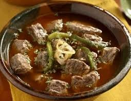

10.Durango

- Platillo: Caldillo durangueño
- Ingredientes: Carne seca (machaca), papas, chile verde, jitomate, ajo, cebolla.
- Historia: Nace como comida de vaqueros y rancheros para resistir el clima extremo del desierto.
- Dato curioso: La carne se deshidrata al sol, lo que le da un sabor muy particular y una larga conservación.